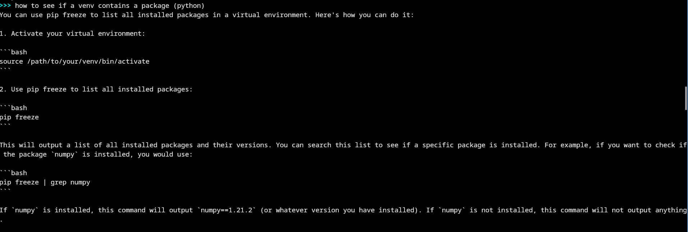
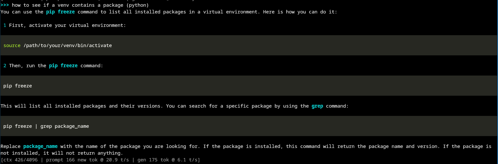

Building My Local AI Assistant
Running outta tokens – for learning trivial and fundamental programming stuff from AI (which I do often) – was a headache. Having 3 different accounts across 3 different websites was a hassle. So, I decided that having an AI coding assistant would be more convenient, and fun to set up as well!
So I ran the whole thing on my CPU, with python, llama.cpp and a DeepSeek 6.7B Coder Instruct.
I had a lot of versions of the python interface and tweaking done to optimize the output reply. (more on that later)
What my laptop actually has
Before downloading anything, I checked what I was working with.
lscpu | grep -i "model name"
It's an Intel Core 7 150U. The rest of lscpu says that
there are 10 physical cores and 12 threads.
lscpu -e shows that threads 0,1 share one core, and
threads 2,3 share another core (therefore, both cores are
performance cores).
Hence, the chip mixes 2 performance cores with 8 efficiency cores.
Then memory:
free -hIt reports 15Gib total. I only have integrated graphics, so the CPU and that memory set the rules.
Installing the build tools
Everything here is on Arch.
sudo pacman -S base-devel cmake git gcc
sudo pacman -S python python-pipFor better CPU performance I also installed OpenBLAS:
sudo pacman -S openblasThe first command is what llama.cpp needs to compile, and the second is for the chat script later. OpenBLAS is an open-source library that does the heavy matrix math on the CPU alone, which suits a laptop with no GPU. As far as I understand it, it helps most while the model is reading your prompt and less while it writes the answer.
Building llama.cpp
git clone https://github.com/ggml-org/llama.cpp.git
cd llama.cpp
cmake -B build -DGGML_BLAS=ON -DGGML_BLAS_VENDOR=OpenBLAS
cmake --build build --config ReleasePicking a model, twice
I started with Qwen 2.5 Coder 7B. Then I switched because i wanted to try out the older DeepSeek models. (If there is a better fit for my specs, meh, i can easily switch it out). So, I decided on the DeepSeek Coder 6.7B Instruct instead for this project.
I went with the Q5_K_M version, a 5-bit quantization. According to TheBloke's model page, it's a 4.79 GB file and needs about 7.3 GB of RAM to run. My backup file was the Q4_K_M file, which is smaller at 4.08 GB. On my laptop, Q5 worked perfectly fine.
mkdir -p ~/llm/models/gguf
cd ~/llm/models/gguf
wget https://huggingface.co/TheBloke/deepseek-coder-6.7B-instruct-GGUF/resolve/main/deepseek-coder-6.7b-instruct.Q5_K_M.ggufSkipping the CLI
Rather than using the CLI every time, a Python script is more convenient. This was my first version. It's partly hand-written, from back when I still planned to use Qwen. This is not the final code at all!
import os
from llama_cpp import Llama
# initializing the model
llm = Llama(
model_path=os.path.expanduser("~/models/qwen2.5-coder-7b-instruct-q4_k_m.gguf"),
n_gpu_layers=0,
n_ctx=2048,
n_threads=8,
verbose=False
)
def chat_with_model(prompt, max_tokens=512):
response = llm.create_completion(
prompt=prompt,
max_tokens=max_tokens,
temperature=0.7,
top_p=0.9,
stop=["</s>", "User:", "Assistant:"]
)
return response["choices"][0]["text"].strip()
if __name__ == "__main__":
print("Qwen 2.5 Coder 7B - Local Coding Assistant")
print("Type 'exit' to quit\n")
while True:
user_input = input("You: ").strip()
if user_input.lower() == "exit":
break
if not user_input:
continue
response = chat_with_model(user_input)
print(f"Assistant: {response}\n")
It loads the model through the llama-cpp-python bindings.
n_gpu_layers=0 keeps everything on the CPU,
n_ctx is the context window, and
n_threads is how many threads it may use. It also sends
the prompt as raw text and forgets everything between questions,
which we do not want obviously lmao
I fed it to Claude and asked for something more in-depth with
Doxygen style comments, tuned for my laptop's specs. What came back
is
deepseek_chat_no_style.py. It starts llama-server from the build in the earlier
step and talks to it over HTTP on 127.0.0.1, so by
default nothing is exposed to the network. It remembers the
conversation, wraps each message in DeepSeek's
### Instruction: format, drops the oldest turns when
the 4096-token context fills up, and prints tokens per second after
every reply. It only needs the Python standard library (this will be
expanded later, read on).
By default it uses 6 threads for generating the answer and 12 for reading the prompt, worked out from the CPU count.
Why the output looked broken
The problem with this version is that the model answers in Markdown, and the script just prints it.

The fix was rich, a Python library that renders
Markdown in the terminal. But the reply arrives one token at a time,
so I couldn't wait and render it at the end. I had to stream the
output through rich's live display, which redraws the Markdown every
time a new piece comes in.
rich needs a pip install, so I put it in a venv. To
avoid repeating that setup, I wrote a bash script,
ds-chat.sh, that automates it:
#!/bin/bash
if [ ! -d ~/llm/scripts/venv ]; then
python -m venv venv
echo "venv created successfully!"
else
echo "venv already existed! Continuing..."
fi
source ~/llm/scripts/venv/bin/activate
if python -m pip freeze | grep -qi "rich"; then
echo "rich is already installed! Continuing..."
else
if python -m pip install rich; then
echo "rich installed successfully!"
else
echo "rich could not be installed!"
exit 1
fi
fi
python ~/llm/scripts/deepseek_chat.py
deactivate
I then bound the script to an alias in my
.zshrc
alias ds-chat="~/scripts/bash/ds-chat.sh"
The rich version is
deepseek_chat.py. Apart from how it prints, it's identical to the first one, and
the rich changes are the part I wrote by hand. The changes are in
the function
def ask(self, user_msg: str, out=sys.stdout).

The line at the bottom is the script's stats line. In that screenshot it shows 6.1 tokens per second for generation and 20.9 for reading the prompt. On another tested basic reply it showed 7.6 for generation, and that number held up on other prompts as well. These are not a proper benchmark, but for a CPU-only laptop, it was fine for me.
What's next
Right now, flags such as --llama-bench are not working
because its not being fed into the actual run cmd of the model. If I
fix this bug in the near future, this will be updated.
Also, the rich version redraws the whole reply for every new token, which feels like the wrong way to do it. If there is a better way, I’ll do it that way!
Thanks for reading!